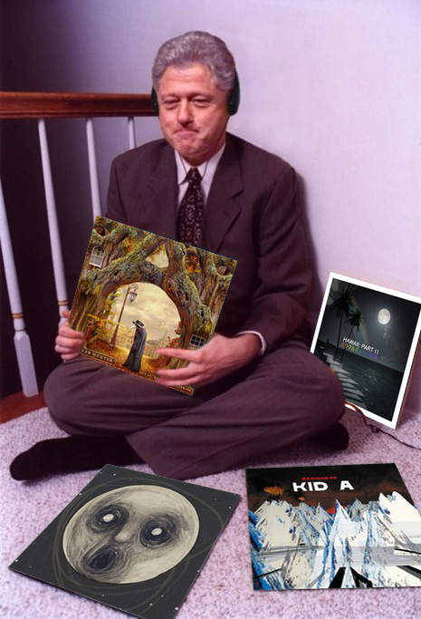

An Introduction and an Apology
Justin was born in southeastern Pennsylvania on May 14th, 1990 along with his identical twin brother.
Raised by a voice teacher and an accountant, Justin was always interested in the worlds of music and math.
He started playing the violin at age 5, and was often in his schools' choirs. He was also fond of acting on stage,
but hasn't done so since college. When Justin attended Eastern Mennonite University, he ultimately decided to become
a math teacher since math was his best subject.
After graduating in 2012, an abnormal opportunity came to Justin as he was searching for math teacher jobs.
A school affiliated with his college had just opened up in the small city of Lezhë, Albania that promoted
its American education. (Since most Americans can't place Albania on a map, there is a map to the right to help you.)
He worked there for three years building its math curriculum and enjoying the Albanian cuisine.
Afterwards, he went back to his college city of Harrisonburg, Virginia and taught there for another 6 years. While
teaching was fulfilling, he found his introverted spirit exhausted at the end of most days. When COVID19 forced
teachers to teach remotely, Justin realized that he felt much more comfortable working virtually with others
on a computer. Following this lead, he looked into the world of programming and decided that it was worth a looks-see.
Next Steps
After talking with a career coach, I (yes, I switched to first person; this feels more personal) got excited about the
idea of an occupation where I could solve logic problems. I had always had at least a slight interest in computer programming
growing up, but I lacked focus when I was younger and assumed "I wasn't smart enough," which is more due to me having
imposter's syndrome than it is about my actual skill. After 9 years of math teaching, I began to convince myself
that I'm skilled in logical thinking and have the focus needed to learn a new trade such as programming. As I dabbled in
some self education this past autumn, I had so much fun learning the languages, and I felt great when I succesfully
found bugs in my code and fixed them; this experience was similar to scanning a student's work and finding their
mistakes. After finishing the prework for Coding Temple and enjoying what I was doing, I felt
even more affirmed in my new direction. I'm excited to learn more and try a whole new life-style! For the first time in
my life, I won't be bound to a school schedule, so maybe I can actually take vacation time in the autumn... Ok, back to third person.
Fun and Games
Justin enjoys many hobbies including television, reading, drawing, and traveling, but his biggest hobbies by far are music and video games.
Justin grew up with Nintendo systems starting with the Nintendo 64 and he is currently is in love with his Nintendo Switch. He discovered
PC gaming in high school, and has an impressive Steam library. If you asked him what games he has, he would probably push his glasses
up and say, "You've probably never heard of it." And then he would look embarrassed and say, "Sorry, that was rude. I mostly play
indie narrative games like Outer Wilds or Spiritfarer." He doesn't express it much, but he secretly hopes that people around him
would bring up how "games aren't written as well as they used to be" so he can jump in and say something stupid like, "Let me introduce
you to Undertale."
While Justin does sing, play violin, play guitar, and is learning piano, he mostly listens to music. It started with movie soundtracks,
but he fell in love with parts of the world of Rock in high school in college. If he could describe his preferred genre, it would
be, "theatrical progressive rock." His favorite two bands are The Dear Hunter (not Deerhunter; don't get him started) and Radiohead.
Justin enjoys many branches of music, but songs that have complexity to their composition are his favorite. Basically, if a song has something
other than a 3/4 or 4/4 time signature he's probably sold. Each of the album covers below links to a song that gives you a taste of his pallet.
